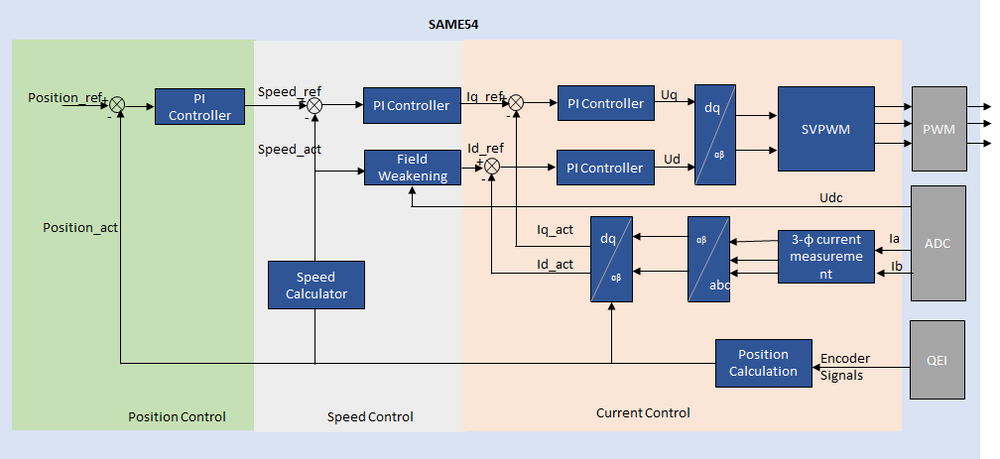
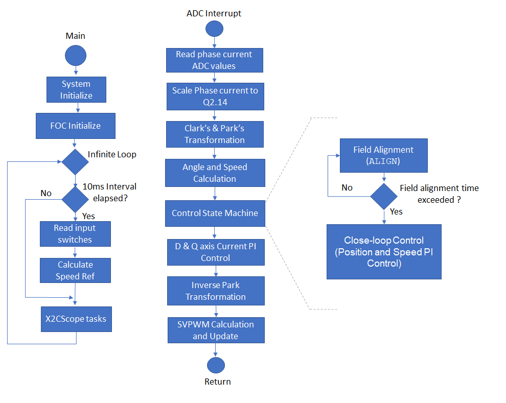
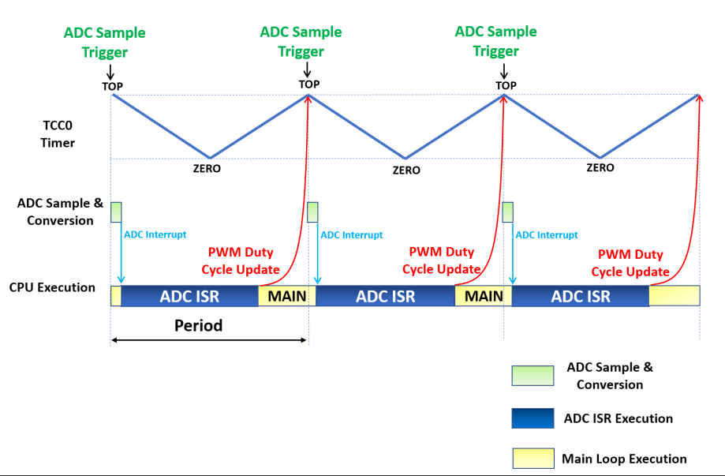
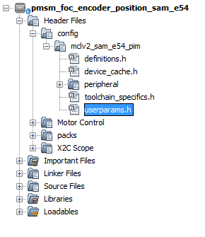

|
Microchip 32-bit Motor Control
|
The project implements an encoder based Field Oriented Control ( FOC ) algorithm on the SAME54 32-bit micro-controller to track the position of the PMSM motor. The following section describes briefly about the FOC algorithm, software design and implementation.
Field Oriented Control is the technique used to achieve the decoupled control of torque and flux. This is done by transforming the stator current quantities (phase currents) from a stationary reference frame to torque and flux producing currents components in a rotating reference frame using mathematical transformations. The Field Oriented Control is done as follows:
1. Measure the motor phase currents.
2. Transform them into the two-phase system (a, b) using the Clarke transformation.
3. Calculate the rotor position angle.
4. Transform stator currents into the d,q-coordinate system using the Park transformation.
5. Position and speed are controlled by position and speed PI controllers respectively.
6. The stator current torque (iq) and flux (id) producing components are controlled separately by the corresponding PI controllers.
7. The output stator voltage space vector is transformed back from the d,q-coordinate system into the two phase system fixed with the stator by the Inverse Park transformation.
8. Using the space vector modulation, the three-phase output voltage is generated.
The phase currents are measured using two shunt resistors connected to Phase U and Phase V inverter legs respectively. The W phase current is determined based on Kirchoff's current law.
The rotor position angle is determined from the Quadrature encoder.
The following block diagram shows the software realization of the FOC algorithm.

Software Design:
The following figure shows the various state machines of the the motor control software.

In the software, the PMSM position control task is realized by a state machine as shown in the previous figure. The following sections briefly describes the various states in the PMSM position control task:
1. Initialize:
In this state, following tasks are performed:
2. Start:
In this state, the motor control state variables are reset and the periodic ADC conversion interrupt is enabled. Control waits for the switch press.
3. Run:
In this state, the motor starts spinning. The below flow chart and the timing diagram shows the tasks performed in run state:

The position control is carried out in the ADC interrupt task.
The quadrature encoder is an incremental encoder. It is important to know the initial position of the rotor to maintain orthogonal rotor and stator flux. To achieve this, the q-axis is excited with a small open loop current while the d-axis is excited with zero current.
In order to avoid pseudo-alignment, i.e. rotor alignment at 180 degrees out of phase, dual step alignment approach is used. The rotor is aligned to an intermediate angle before aligning it to the zero position.
After the initial alignment, an electrical angle is shifted by 90 degrees to obtain the maximum torque.
After the alignment, the close loop control using the FOC algorithm is done.
Software Configuration:
The FOC algorithm is used across different application fields. In order to get the optimal control of the PMSM motor, the motor specific parameters, board specific parameters and application parameter macros have to be updated in the software. The following section describes how to update both motor and application specific parameters in the the project. These parameter macros can be found in userparams.h header file which can be found under logical path: Header Files > config > <config_name> >userparams.h in MPLABX IDE.

The PWM controller frequency ( in Hz ) can be configured by setting the following macro in userparams.h file.
This frequency should be same as the frequency configured in the PWM peripheral in the MHC.
|
Macro |
Description |
|
PWM_FREQUENCY |
Current controller and PWM frequency in Hz. |
Set the following motor parameters in userparams.h file.
|
Macro |
Description |
Unit |
|
MOTOR_PER_PHASE_RESISTANCE |
Motor per phase resistance |
Ohm |
|
MOTOR_PER_PHASE_INDUCTANCE |
Motor per phase inductance |
Henry |
|
MOTOR_BEMF_CONST_V_PEAK_LL_KRPM_MECH |
Back EMF constant |
Vpk(L-L)/KRPM |
|
NUM_POLE_PAIRS |
Number of pole pairs |
|
|
RATED_SPEED_RPM |
Rated mechanical speed of the motor |
rpm |
|
MAX_SPEED_RPM |
Maximum mechanical speed of the motor |
rpm |
|
ENCODER_PULSES_PER_REV |
Number of encoder pulses per mechanical revolution |
|
3. Setting PI Controller parameters:
Depending on the type of motor used and the corresponding application, PI controller parameters should to be updated in userparams.h file.
Parameters for position Control loop:
|
Macro |
Description |
|
POSCNTR_PTERM |
Proportional gain of position control loop |
|
POSCNTR_ITERM |
Integral gain of speed position loop |
|
POSCNTR_CTERM |
Anti-windup term of position control loop |
|
POSCNTR_OUTMAX |
Maximum controller output of position control loop |
Parameters for speed Control loop:
|
Macro |
Description |
|
SPEEDCNTR_PTERM |
Proportional gain of speed control loop |
|
SPEEDCNTR_ITERM |
Integral gain of speed control loop |
|
SPEEDCNTR_CTERM |
Anti-windup term of speed control loop |
|
SPEEDCNTR_OUTMAX |
Maximum controller output of speed control loop |
Parameters for Id current loop:
|
Macro |
Description |
|
D_CURRCNTR_PTERM |
Proportional gain of Id current control loop |
|
D_CURRCNTR_ITERM |
Integral gain of Id current control loop |
|
D_CURRCNTR_CTERM |
Anti-windup term of Id current control loop |
|
D_CURRCNTR_OUTMAX |
Maximum controller output of Id current control loop |
Parameters for Iq current loop:
|
Macro |
Description |
|
Q_CURRCNTR_PTERM |
Proportional gain of Iq current control loop |
|
Q_CURRCNTR_ITERM |
Integral gain of Iq current control loop |
|
Q_CURRCNTR_CTERM |
Anti-windup term of Iq current control loop |
|
Q_CURRCNTR_OUTMAX |
Maximum controller output of Iq current control loop |
|
Microchip 32-bit Motor Control
|